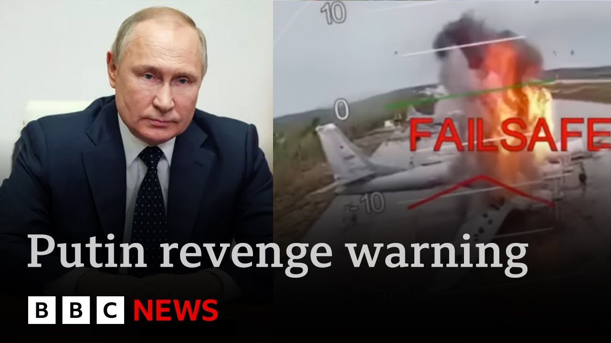

【普京将报复乌克兰摧毁俄罗斯战机 特朗普警告 | BBC新闻】
Summary: Vladimir Putin vowed revenge for Ukraine's drone strikes on Russian air bases, damaging or destroying 41 planes. He discussed retaliation with Donald Trump, who expressed pessimism about peace. Ukraine showcased its successful operation, while Putin dismissed ceasefire talks, calling Ukraine "terrorists." Diplomatic efforts continue, but a ceasefire seems unlikely.
摘要： 普京誓言报复乌克兰对俄罗斯空军基地的无人机袭击，造成41架飞机损毁。他与特朗普讨论了报复行动，特朗普对和平前景表示悲观。乌克兰展示了其成功行动，而普京拒绝停火谈判，称乌克兰为“恐怖分子”。外交努力仍在继续，但停火希望渺茫。

⏱️ Estimated Reading Time: 6 min
📚 高考3500生词 📚 雅思生词 📚 托福生词 📚 GRE生词 📚 UP主推荐生词
Vladimir Putin has promised revenge for Ukraine's drone strikes on Russian air bases at the weekend.
弗拉基米尔·普京誓言报复乌克兰周末对俄罗斯空军基地的无人机袭击。
He discussed his response during a surprise phone call with President Trump this afternoon, which the US president then posted about on social media.
他在今天下午与特朗普总统的意外通话中讨论了报复行动，随后美国总统在社交媒体上发文提及此事。
Ukraine says 41 Russian planes were damaged or destroyed in their attacks.
乌克兰称其袭击造成41架俄罗斯飞机损毁。
One of the air bases was at least 3,000 miles from the Ukrainian border.
其中一个空军基地距乌克兰边境至少3000英里。
In a moment, we'll get the latest from Washington.
稍后我们将从华盛顿获取最新消息。
But first, from Kev, our diplomatic correspondent Paul Adams sent this report.
但首先，我们的外交记者保罗·亚当斯从基辅发回报道。
Three days on and another jaw-dropping look at Sunday's spectacular operation.
三天过去，周日那场惊人行动的更多细节浮出水面。
Plane after Russian plane hunted down by a swarm of Ukrainian drones.
一架接一架的俄罗斯飞机被乌克兰无人机群追击。
Some destroyed, others possibly beyond repair.
部分被摧毁，其余的或许无法修复。
A glance under the wing.
机翼下一瞥。
Cruise missiles ready for launch.
巡航导弹已准备就绪。
and confirmation that Russia's dwindling fleet of prized early warning and control aircraft were among the targets clearly struck but the extent of the damage not immediately clear and then the containers used to transport the drones to airfields deep inside Russia looking for all the world like mobile homes retractable roofs visible Ukraine offering carefully calculated glimpses of its work and rewarding those who carried it out.
俄罗斯珍贵的预警和控制飞机数量减少，此次确认成为袭击目标，但损毁程度尚不明确。运送无人机至俄境内深处的集装箱形似移动房屋，可伸缩顶棚清晰可见。乌克兰谨慎展示行动细节，并嘉奖执行人员。
President Zilinski handing medals to officers whose identities, for obvious reasons, are not revealed, saying Operation Spider's Weapon could have been avoided.
泽连斯基总统向军官颁发勋章（出于安全考虑未公开身份），称“蜘蛛武器”行动本可避免。
A ceasefire could have happened before the operation, right?
停火本可在行动前达成，对吧？
Would the operation have taken place in that case?
若如此，行动还会发生吗？
No.
不会。
But it doesn't mean we do nothing in the meantime.
但这不意味着我们坐以待毙。
But the Russian leader seems in no mood to budge.
但俄罗斯领导人似乎无意让步。
Clearly insensed by recent events.
显然对近期事件极为愤怒。
They're asking for a ceasefire for 30 or 60 days.
他们要求30或60天停火。
They're asking for a summit.
他们要求举行峰会。
But how can we have such meetings in these conditions?
但当前形势下如何举行此类会议？
What is there to talk about?
有何可谈？
How can we negotiate with terrorists?
我们怎能与恐怖分子谈判？
Why should we encourage them by giving them a pause in fighting?
为何要通过停战鼓励他们？
None of this bodess well for Donald Trump's efforts to end this war.
这一切对特朗普结束战争的努力不利。
speaking to Mr. Putin for the first time since Sunday's attacks and sounding a starkly pessimistic note.
自周日袭击后首次与普京通话，特朗普语气明显悲观。
It was a good conversation, the president wrote on social media, but not a conversation that will lead to immediate peace.
总统在社交媒体上称“谈话良好”，但不会立即带来和平。
President Putin did say and very strongly that he will have to respond to the recent attack on the airfields.
普京强烈表示必将对近期空军基地遇袭作出回应。
For all the sound and fury of this week, there is still a diplomatic process.
尽管本周局势紧张，外交进程仍在继续。
In a few days time, we should see the largest prisoner swap of the war so far.
几天后将迎来战争以来最大规模换俘。
But as for a ceasefire, well, that remains a very elusive prospect.
但停火仍是遥不可及。
Paul Adams, BBC News, Kiev.
BBC新闻，保罗·亚当斯，基辅报道。
And let's get the latest from Washington and our correspondent there, Gary O' Donahghue.
接下来连线华盛顿记者加里·奥多纳休获取最新消息。
Uh Gary, President Trump not sounding as optimistic tonight as he did just a week or two ago.
加里，特朗普总统今晚的乐观情绪较一两周前明显减弱。
Yeah, J. marketkedly different tone I think in terms of this conversation, a shorter conversation and also one where he admits that really peace isn't anywhere near around the corner.
是的，此次通话基调截然不同——时间更短，且他承认和平遥遥无期。
We do know, of course, that he's been trying to enforce this ceasefire, this 30-day pause, but there doesn't seem to be any appetite for that.
我们知道他试图推动30天停火，但各方均无兴趣。
Also, we're seeing tonight that Vladimir Zalinski is intervening in this discussion as well.
今晚泽连斯基也介入讨论。
He's not directing his comments immediately Donald Trump, but I think it's clear where he's talking.
他未直接点名特朗普，但矛头所指显而易见。
He's saying that he Vladimir Putin is giving the middle finger in his words to those who hesitate to increase pressure on Russia.
他称普京对犹豫是否加大对俄施压者“竖中指”。
And he's also saying that the powerful if they don't stop Vladimir Putin, then they share the responsibility.
他还表示，若强国不阻止普京，则需共同承担责任。
Now, we know that Donald Trump because he said so has a red line in his head beyond which he will walk away from this.
特朗普曾表态脑海中有“红线”，越线即退出。
He hasn't said precisely where that is, but I think the sense tonight is that we're getting ever closer to it.
他未明确红线位置，但今晚感觉已逼近临界点。
And if that comes along with the end of military and financial aid to Ukraine, that could be incredibly serious for them continuing the war.
若此时停止对乌军事和财政援助，战局将急剧恶化。
Gary, thank you.
加里，谢谢。
Gary O' Donahue
加里·奥多纳休